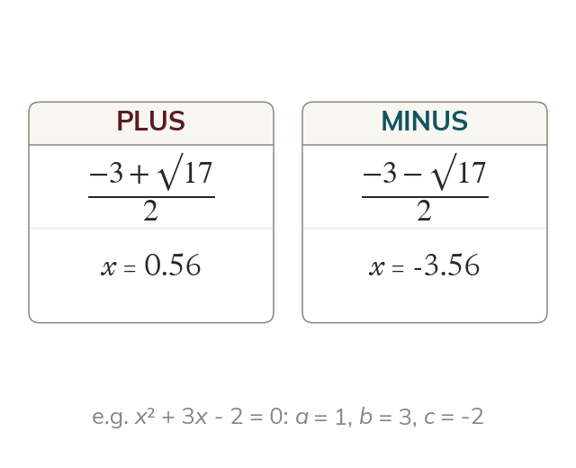

One formula for every quadratic
Every quadratic ax² + bx + c = 0 is solved by the formula. Its ± gives the two solutions.
Every equation ax² + bx + c = 0 can be solved with x = −b ± √(b² − 4ac)2a. The plus and the minus give its two solutions.